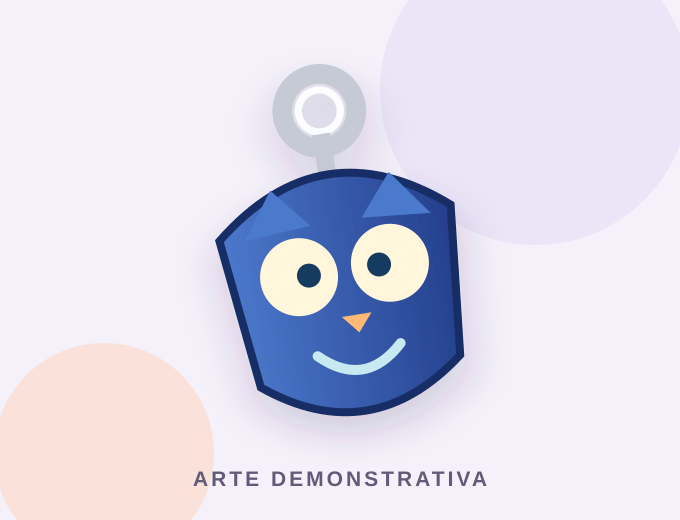

PET EDUCAÇÃO · CONEXÃO DE SABERES
Catálogo de chaveiros.
Conheça nossos modelos, confira as cores disponíveis e encontre mais informações no Instagram do PET Educação.
Catálogo informativo • Não há vendas ou pagamentos neste site


MODELOSEM 3D
NAVEGUE PELO CATÁLOGO
Por onde começar?
Escolha uma seção para explorar.